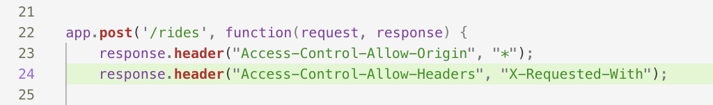
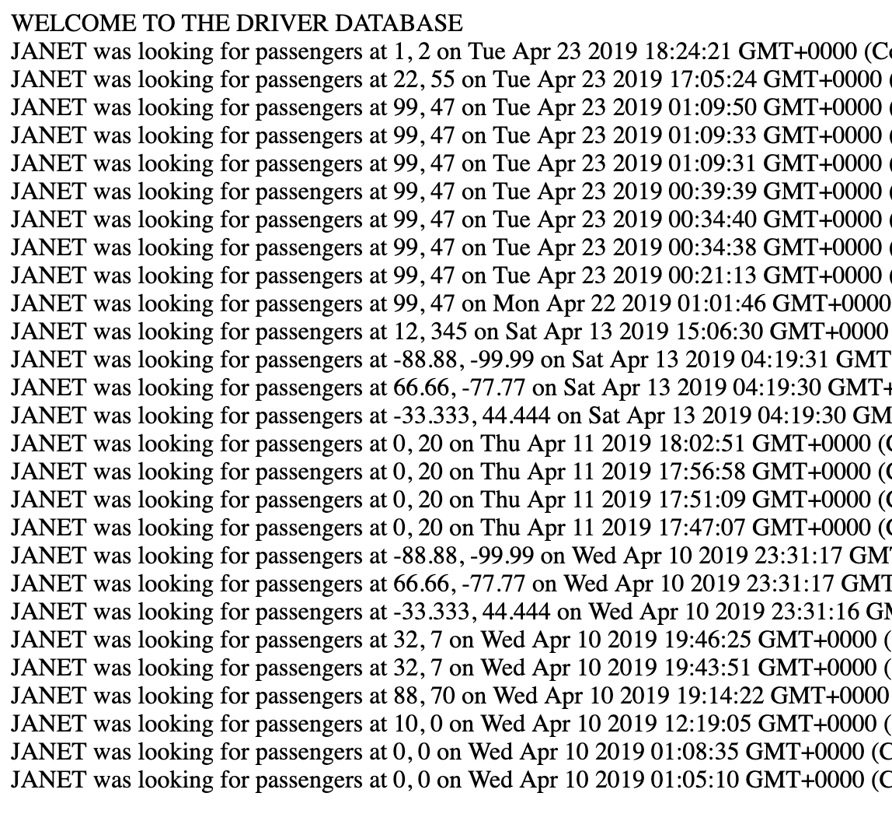
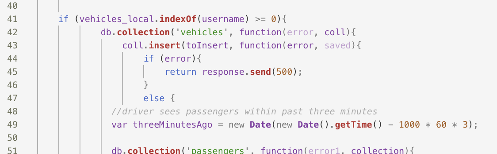

Security Report: Ugo's A2 and A3
I was tasked with testing and analyzing Akwarandu Nwachuku's (Ugo's) work on a knockoff version of Lyft and his server to host that knockoff. The server supported two GET and one POST method, with which input data was stored in a mongoDB database.
To begin and familiarize myself with his website, I sent data to his server via curl and looked at his webpages. Next I made multiple attempts at an injection attack. I used Burp Suite to try cross site scripting.
I could not find security issues with Ugo's work. His code is resistant to two of the most common types of security attacks. However, I identified three security and privacy vulnerabilities and issues. First, Ugo does not protect his webpage from other websites and sources, so a malicious user may be able to commit detrimental actions on the site that Ugo and others may not be aware of. Second, his website displays prior locations of drivers and passengers, which is a major security issue. Last, Ugo's code is not written in the most efficient way, so should there be an uptick in traffic to his website, it may not function properly.
The identified issues are listed below with recommendations:
Issue: Cross-Origin Resource Sharing vulnerability
- Location: POST /rides in server
- Severity: high; this vulnerability enables malicious script to be run on the site from another source, and the website contains sensitive data (e.g. users' locations)
- Description: CORS restricts how a document or script is loaded from one origin can interact with a resource from another origin, and without restricting cross-origin sharing, users and their information is vulnerable.
- Proof:

- Recommendation: disable cross-origin sharing or put additional security in place to protect user information
Issue: Privacy vulnerability
- Location: homepage and on the '/passenger.json' page when a valid username is put in the query string
- Severity: high; this vulnerability makes previous users' names, prior locations, and the times they were there easily available, which is a breach in privacy and has safety implications for those users
- Description: on loading the website, a list of drivers looking for passengers is shown with when and where they were searching for passengers. On the '/passenger.json' page, sending a valid passenger username will result in a list of their previous locations
- Proof:

- Recommendation: change the homepage and the list of passengers such that usernames are masked or locations aren't included
Issue: Poor programming practice
- Location: when checking if the username provided in the HTTP request is a vehicle or a passenger
- Severity: low; this does not pose any great security or privacy threats, it just may slow down the site if there are a lot of HTTP post requests coming in
- Description: to check if the user-provided username is a passenger or vehicle, Ugo used a for loop to search the array of vehicles
- Proof:

- Recommendation: It could be faster to instead search the list to see if it includes the requested username. For example, 'if (array.includes(username)' could work better
There are some security and privacy vulnerabilities that arise from cross-origin resource sharing allowances and sensitive user data that is being shared, but Ugo's work is secure and resisted injection and cross site scripting attacks. In the future CORS adjustments should be made and sensitive user data (e.g. location information) should not be displayed to anyone who can access the website.
Below are the sites I accessed to better understand the assignment